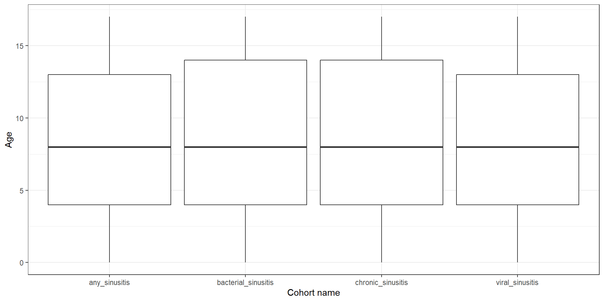
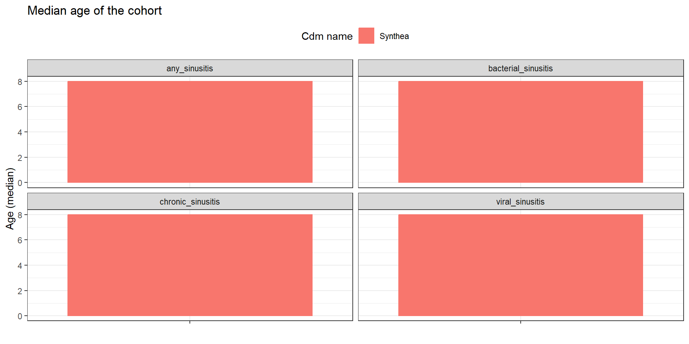
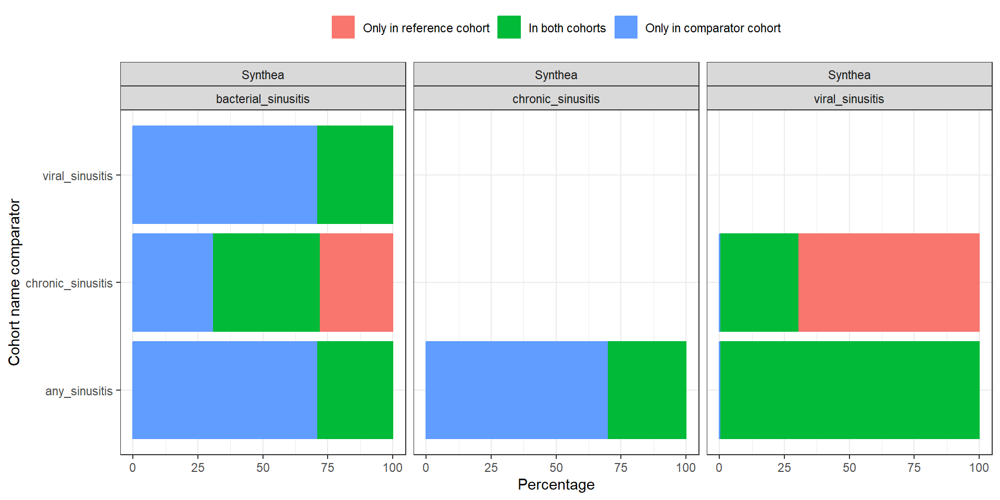
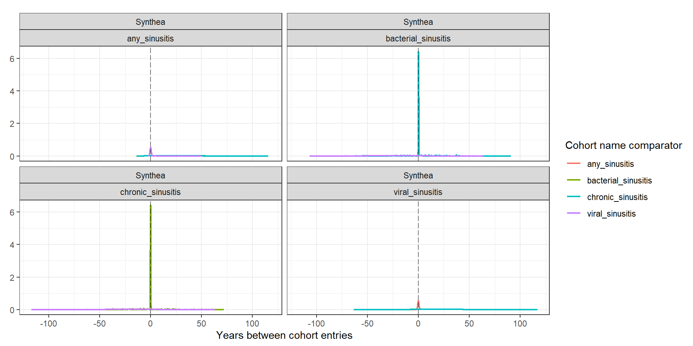

library(duckdb)
library(CDMConnector)
library(PatientProfiles)
library(dplyr)
library(ggplot2)
con <- dbConnect(duckdb(), eunomiaDir())
cdm <- cdmFromCon(con = con, cdmSchema = "main", writeSchema = "main")
cdm <- generateConceptCohortSet(
cdm = cdm,
name = "sinusitis",
conceptSet = list(
"bacterial_sinusitis" = 4294548,
"viral_sinusitis" = 40481087,
"chronic_sinusitis" = 257012,
"any_sinusitis" = c(4294548, 40481087, 257012)
),
limit = "all",
end = 0
)
cdm$new_sinusitis <- cdm$sinusitis |>
addSex() |>
filter(sex == "Female") |>
select(-"sex") |>
compute(name = "new_sinusitis", temporary = F) |>
recordCohortAttrition("Restrict to Females") |>
addAge() |>
filter(age < 18) |>
select(-"age") |>
compute(name = "new_sinusitis", temporary = F) |>
recordCohortAttrition("Restrict to under 18")
cdm <- generateConceptCohortSet(
cdm = cdm,
conceptSet = list(
"myocardial_infarction" = c(4329847),
"fracture" = c(4048695, 4142905, 4278672, 4237458, 4230399, 40480160, 4066995, 4059173, 4134304),
"allergy" = c(4084167, 40486433, 4280726, 4048171),
"infection" = c(4116491, 433125, 4056621, 40481087, 4112343),
"pneumonia" = c(255848),
"asthma" = c(4051466, 317009)
),
limit = "all",
end = 0,
name = "conditions"
)
cdm <- generateConceptCohortSet(
cdm = cdm,
conceptSet = list(
"antineoplastic_and_immunomodulating_agents" = c(1118088, 1118084, 40224132, 19010482, 40224805, 19007333, 1500211, 1305058, 1503184, 19134077, 1549786),
"musculoskeletal_system" = c(1118088, 1557272, 40162359, 1124300, 1115008, 40173590, 1118084, 42707627, 19019273, 19019979, 19078461, 19003953, 1112807, 1115171, 1177480),
"antiinfectives_for_systemic_use" = c(19129655, 1728416, 920293, 19074841, 920300, 920334, 19074843, 19075001, 19073183, 19073188, 1713671, 1729720, 19006318, 1778162, 46275444, 1717327, 1738521, 1741122, 1759842, 1713332, 1746114, 1768849, 46233710, 19133873, 46233988, 19133905),
"nervous_system" = c(708298, 701322, 723013, 1129625, 1110410, 753626, 1124957, 1102527, 1125315, 782043, 791967, 1119510, 19078219, 757627, 40220386, 740275, 40223774, 1154029, 1127078, 1127433, 40222846, 19057271, 40223768, 45892894, 705944, 715997, 19078924, 19076374, 19077572, 40229134, 19059056, 19016749, 40236446, 19074679, 742185, 40231925, 1112807, 35605858, 40162522, 782047, 19039298, 19059528, 836654, 836659, 19115351, 19023398, 19002770, 19123231, 19133768, 40165015),
"dermatologicals" = c(1129625, 1149380, 1124300, 836654, 1595799, 975125, 19008572),
"respiratory_system" = c(1129625, 1149196, 1149380, 1150770, 1150836, 1153428, 1107830, 1110410, 738818, 1124957, 40169216, 1125443, 1119510, 1137529, 1154615, 1154343, 40223821, 19019979, 19112599, 40223834, 43012036, 40229134, 19029476, 19078461, 40232448, 1177480, 1192710, 1343916, 1150771, 1150837, 1107882, 975125, 1174888, 40169281, 40228214, 40228230, 19125062)
),
limit = "all",
end = "event_end_date",
name = "medications"
)CohortCharacteristics
summariseCharacteristics and summariseLargeScaleCharacteristics
CohortCharacteristics
Let’s get started
Workflow
We have three types of functions:
summarise: these functions produce an standardised output to summarise a cohort. This standard output is called
summarised_result.plot: these functions produce plots (currently, only ggplot, but working to implement plotly) from a
summarised_resultobject.table: these functions produce tables (gt and flextable) from a
summarised_resultobject.
Contents
Website
Cohort characteristics is on cran:
install.packages("CohortCharacteristics")You can also install the development version from our github repo:
remotes::install_github("darwin-eu-dev/CohortCharacteristics")The documentation and vignettes of the packages can be found in our page: https://darwin-eu-dev.github.io/CohortCharacteristics/
summariseCharacteristics
To get summarise characteristics for your cohort, pipe in below to your cohort table.
library(CohortCharacteristics)
results <- cdm$new_sinusitis |>
summariseCharacteristics()Its return the cohort characteristics in a summarised_result object format.
results |> glimpse()Rows: 168
Columns: 13
$ result_id <int> 1, 1, 1, 1, 1, 1, 1, 1, 1, 1, 1, 1, 1, 1, 1, 1, 1, 1, 1, 1, 1, 1, 1, 1, 1, 1, 1, 1, 1, 1, 1, 1, 1, 1, 1…
$ cdm_name <chr> "Synthea", "Synthea", "Synthea", "Synthea", "Synthea", "Synthea", "Synthea", "Synthea", "Synthea", "Syn…
$ group_name <chr> "cohort_name", "cohort_name", "cohort_name", "cohort_name", "cohort_name", "cohort_name", "cohort_name"…
$ group_level <chr> "bacterial_sinusitis", "bacterial_sinusitis", "bacterial_sinusitis", "bacterial_sinusitis", "bacterial_…
$ strata_name <chr> "overall", "overall", "overall", "overall", "overall", "overall", "overall", "overall", "overall", "ove…
$ strata_level <chr> "overall", "overall", "overall", "overall", "overall", "overall", "overall", "overall", "overall", "ove…
$ variable_name <chr> "Number records", "Number subjects", "Cohort start date", "Cohort start date", "Cohort start date", "Co…
$ variable_level <chr> NA, NA, NA, NA, NA, NA, NA, NA, NA, NA, NA, NA, NA, NA, NA, NA, NA, NA, NA, "Female", "Female", NA, NA,…
$ estimate_name <chr> "count", "count", "min", "q25", "median", "q75", "max", "min", "q25", "median", "q75", "max", "min", "q…
$ estimate_type <chr> "integer", "integer", "date", "date", "date", "date", "date", "date", "date", "date", "date", "date", "…
$ estimate_value <chr> "154", "147", "1912-05-27", "1959-04-02", "1971-05-29", "1982-05-23", "1998-12-05", "1912-05-27", "1959…
$ additional_name <chr> "overall", "overall", "overall", "overall", "overall", "overall", "overall", "overall", "overall", "ove…
$ additional_level <chr> "overall", "overall", "overall", "overall", "overall", "overall", "overall", "overall", "overall", "ove…tableCharacteristics
To get a tidy table from the summarised_result object.
results |> tableCharacteristics(header = "cohort_name")| CDM name | Variable name | Variable level | Estimate name |
Cohort name
|
|||
|---|---|---|---|---|---|---|---|
| bacterial_sinusitis | viral_sinusitis | chronic_sinusitis | any_sinusitis | ||||
| Synthea | Number records | - | N | 154 | 2,623 | 154 | 2,931 |
| Number subjects | - | N | 147 | 1,182 | 154 | 1,221 | |
| Cohort start date | - | Median [Q25 - Q75] | 1971-05-29 [1959-04-02 - 1982-05-23] | 1969-09-24 [1957-10-29 - 1980-04-08] | 1972-05-19 [1959-03-02 - 1981-11-11] | 1969-12-12 [1958-01-09 - 1980-08-10] | |
| Range | 1912-05-27 to 1998-12-05 | 1908-10-30 to 2002-08-24 | 1913-02-09 to 1998-09-29 | 1908-10-30 to 2002-08-24 | |||
| Cohort end date | - | Median [Q25 - Q75] | 1971-05-29 [1959-04-02 - 1982-05-23] | 1969-09-24 [1957-10-29 - 1980-04-08] | 1972-05-19 [1959-03-02 - 1981-11-11] | 1969-12-12 [1958-01-09 - 1980-08-10] | |
| Range | 1912-05-27 to 1998-12-05 | 1908-10-30 to 2002-08-24 | 1913-02-09 to 1998-09-29 | 1908-10-30 to 2002-08-24 | |||
| Age | - | Median [Q25 - Q75] | 8 [4 - 14] | 8 [4 - 13] | 8 [4 - 14] | 8 [4 - 13] | |
| Mean (SD) | 8.45 (5.41) | 8.53 (5.10) | 8.49 (5.43) | 8.52 (5.13) | |||
| Range | 0 to 17 | 0 to 17 | 0 to 17 | 0 to 17 | |||
| Sex | Female | N (%) | 154 (100.00%) | 2,623 (100.00%) | 154 (100.00%) | 2,931 (100.00%) | |
| Prior observation | - | Median [Q25 - Q75] | 3,074 [1,560 - 5,134] | 3,218 [1,717 - 4,899] | 2,928 [1,648 - 5,136] | 3,198 [1,696 - 4,925] | |
| Mean (SD) | 3,262.81 (1,981.36) | 3,298.49 (1,868.79) | 3,275.45 (1,978.91) | 3,295.40 (1,880.12) | |||
| Range | 64 to 6,567 | 35 to 6,573 | 96 to 6,565 | 35 to 6,573 | |||
| Future observation | - | Median [Q25 - Q75] | 17,198 [13,309 - 21,557] | 17,749 [13,924 - 21,928] | 17,064 [13,549 - 21,200] | 17,653 [13,832 - 21,878] | |
| Mean (SD) | 18,100.36 (6,556.41) | 18,338.98 (5,884.26) | 17,783.61 (6,261.00) | 18,297.26 (5,940.87) | |||
| Range | 7,069 to 39,104 | 5,660 to 40,093 | 6,986 to 38,753 | 5,660 to 40,093 | |||
| Days in cohort | - | Median [Q25 - Q75] | 1 [1 - 1] | 1 [1 - 1] | 1 [1 - 1] | 1 [1 - 1] | |
| Mean (SD) | 1.00 (0.00) | 1.00 (0.00) | 1.00 (0.00) | 1.00 (0.00) | |||
| Range | 1 to 1 | 1 to 1 | 1 to 1 | 1 to 1 | |||
Commonly used arguement for summarisedCharacteristics
stratato create stratification for the results.cohortIdfilter by cohort Id.ageGroupA list of age groups to return count for.tableIntersectcount/flag/date/dayscohortIntersectcount/flag/date/daysconceptIntersectcount/flag/date/days
ageGroup example
cdm$new_sinusitis |>
summariseCharacteristics(ageGroup = list(c(0,10),c(11,18))) |>
tableCharacteristics(header = "cohort_name")| CDM name | Variable name | Variable level | Estimate name |
Cohort name
|
|||
|---|---|---|---|---|---|---|---|
| bacterial_sinusitis | viral_sinusitis | chronic_sinusitis | any_sinusitis | ||||
| Synthea | Number records | - | N | 154 | 2,623 | 154 | 2,931 |
| Number subjects | - | N | 147 | 1,182 | 154 | 1,221 | |
| Cohort start date | - | Median [Q25 - Q75] | 1971-05-29 [1959-04-02 - 1982-05-23] | 1969-09-24 [1957-10-29 - 1980-04-08] | 1972-05-19 [1959-03-02 - 1981-11-11] | 1969-12-12 [1958-01-09 - 1980-08-10] | |
| Range | 1912-05-27 to 1998-12-05 | 1908-10-30 to 2002-08-24 | 1913-02-09 to 1998-09-29 | 1908-10-30 to 2002-08-24 | |||
| Cohort end date | - | Median [Q25 - Q75] | 1971-05-29 [1959-04-02 - 1982-05-23] | 1969-09-24 [1957-10-29 - 1980-04-08] | 1972-05-19 [1959-03-02 - 1981-11-11] | 1969-12-12 [1958-01-09 - 1980-08-10] | |
| Range | 1912-05-27 to 1998-12-05 | 1908-10-30 to 2002-08-24 | 1913-02-09 to 1998-09-29 | 1908-10-30 to 2002-08-24 | |||
| Age | - | Median [Q25 - Q75] | 8 [4 - 14] | 8 [4 - 13] | 8 [4 - 14] | 8 [4 - 13] | |
| Mean (SD) | 8.45 (5.41) | 8.53 (5.10) | 8.49 (5.43) | 8.52 (5.13) | |||
| Range | 0 to 17 | 0 to 17 | 0 to 17 | 0 to 17 | |||
| Age group | 0 to 10 | N (%) | 93 (60.39%) | 1,615 (61.57%) | 92 (59.74%) | 1,800 (61.41%) | |
| 11 to 18 | N (%) | 61 (39.61%) | 1,008 (38.43%) | 62 (40.26%) | 1,131 (38.59%) | ||
| Sex | Female | N (%) | 154 (100.00%) | 2,623 (100.00%) | 154 (100.00%) | 2,931 (100.00%) | |
| Prior observation | - | Median [Q25 - Q75] | 3,074 [1,560 - 5,134] | 3,218 [1,717 - 4,899] | 2,928 [1,648 - 5,136] | 3,198 [1,696 - 4,925] | |
| Mean (SD) | 3,262.81 (1,981.36) | 3,298.49 (1,868.79) | 3,275.45 (1,978.91) | 3,295.40 (1,880.12) | |||
| Range | 64 to 6,567 | 35 to 6,573 | 96 to 6,565 | 35 to 6,573 | |||
| Future observation | - | Median [Q25 - Q75] | 17,198 [13,309 - 21,557] | 17,749 [13,924 - 21,928] | 17,064 [13,549 - 21,200] | 17,653 [13,832 - 21,878] | |
| Mean (SD) | 18,100.36 (6,556.41) | 18,338.98 (5,884.26) | 17,783.61 (6,261.00) | 18,297.26 (5,940.87) | |||
| Range | 7,069 to 39,104 | 5,660 to 40,093 | 6,986 to 38,753 | 5,660 to 40,093 | |||
| Days in cohort | - | Median [Q25 - Q75] | 1 [1 - 1] | 1 [1 - 1] | 1 [1 - 1] | 1 [1 - 1] | |
| Mean (SD) | 1.00 (0.00) | 1.00 (0.00) | 1.00 (0.00) | 1.00 (0.00) | |||
| Range | 1 to 1 | 1 to 1 | 1 to 1 | 1 to 1 | |||
strata example
cdm$new_sinusitis |>
addAge(ageGroup = list(c(0,10),c(11,18))) |>
summariseCharacteristics(cohortId = 1,
strata = list("age_group")) |>
tableCharacteristics(header = "age_group")| CDM name | Cohort name | Variable name | Variable level | Estimate name |
Age group
|
||
|---|---|---|---|---|---|---|---|
| overall | 0 to 10 | 11 to 18 | |||||
| Synthea | bacterial_sinusitis | Number records | - | N | 154 | 93 | 61 |
| Number subjects | - | N | 147 | 92 | 57 | ||
| Cohort start date | - | Median [Q25 - Q75] | 1971-05-29 [1959-04-02 - 1982-05-23] | 1967-01-23 [1957-07-08 - 1977-03-15] | 1980-08-02 [1967-11-01 - 1987-09-12] | ||
| Range | 1912-05-27 to 1998-12-05 | 1912-05-27 to 1990-07-30 | 1928-12-03 to 1998-12-05 | ||||
| Cohort end date | - | Median [Q25 - Q75] | 1971-05-29 [1959-04-02 - 1982-05-23] | 1967-01-23 [1957-07-08 - 1977-03-15] | 1980-08-02 [1967-11-01 - 1987-09-12] | ||
| Range | 1912-05-27 to 1998-12-05 | 1912-05-27 to 1990-07-30 | 1928-12-03 to 1998-12-05 | ||||
| Age | - | Median [Q25 - Q75] | 8 [4 - 14] | 4 [2 - 7] | 15 [12 - 16] | ||
| Mean (SD) | 8.45 (5.41) | 4.58 (2.81) | 14.34 (2.00) | ||||
| Range | 0 to 17 | 0 to 10 | 11 to 17 | ||||
| Sex | Female | N (%) | 154 (100.00%) | 93 (100.00%) | 61 (100.00%) | ||
| Prior observation | - | Median [Q25 - Q75] | 3,074 [1,560 - 5,134] | 1,775 [1,055 - 2,638] | 5,548 [4,729 - 6,004] | ||
| Mean (SD) | 3,262.81 (1,981.36) | 1,850.14 (1,037.23) | 5,416.56 (742.91) | ||||
| Range | 64 to 6,567 | 64 to 3,939 | 4,071 to 6,567 | ||||
| Future observation | - | Median [Q25 - Q75] | 17,198 [13,309 - 21,557] | 19,056 [15,125 - 22,370] | 13,793 [11,252 - 18,727] | ||
| Mean (SD) | 18,100.36 (6,556.41) | 19,869.68 (6,339.38) | 15,402.89 (5,978.68) | ||||
| Range | 7,069 to 39,104 | 10,149 to 39,104 | 7,069 to 32,731 | ||||
| Days in cohort | - | Median [Q25 - Q75] | 1 [1 - 1] | 1 [1 - 1] | 1 [1 - 1] | ||
| Mean (SD) | 1.00 (0.00) | 1.00 (0.00) | 1.00 (0.00) | ||||
| Range | 1 to 1 | 1 to 1 | 1 to 1 | ||||
intersection with another table
you can get the count/flag/date//days with other tables
cdm$new_sinusitis |>
summariseCharacteristics(
tableIntersectCount = list(
"Number of visits prior year" = list(
tableName = "visit_occurrence", window = c(-365, 0)
)
),
cohortIntersectFlag = list(
"Conditions any time prior" = list(
targetCohortTable = "conditions", window = c(-Inf, 0)
),
"Medications prior year" = list(
targetCohortTable = "medications", window = c(-365, 0)
)
)
) |>
tableCharacteristics(header = "cohort_name")intersection with another table
you can get the count/flag/date//days with other tables
| CDM name | Variable name | Variable level | Estimate name |
Cohort name
|
|||
|---|---|---|---|---|---|---|---|
| bacterial_sinusitis | viral_sinusitis | chronic_sinusitis | any_sinusitis | ||||
| Synthea | Number records | - | N | 154 | 2,623 | 154 | 2,931 |
| Number subjects | - | N | 147 | 1,182 | 154 | 1,221 | |
| Cohort start date | - | Median [Q25 - Q75] | 1971-05-29 [1959-04-02 - 1982-05-23] | 1969-09-24 [1957-10-29 - 1980-04-08] | 1972-05-19 [1959-03-02 - 1981-11-11] | 1969-12-12 [1958-01-09 - 1980-08-10] | |
| Range | 1912-05-27 to 1998-12-05 | 1908-10-30 to 2002-08-24 | 1913-02-09 to 1998-09-29 | 1908-10-30 to 2002-08-24 | |||
| Cohort end date | - | Median [Q25 - Q75] | 1971-05-29 [1959-04-02 - 1982-05-23] | 1969-09-24 [1957-10-29 - 1980-04-08] | 1972-05-19 [1959-03-02 - 1981-11-11] | 1969-12-12 [1958-01-09 - 1980-08-10] | |
| Range | 1912-05-27 to 1998-12-05 | 1908-10-30 to 2002-08-24 | 1913-02-09 to 1998-09-29 | 1908-10-30 to 2002-08-24 | |||
| Age | - | Median [Q25 - Q75] | 8 [4 - 14] | 8 [4 - 13] | 8 [4 - 14] | 8 [4 - 13] | |
| Mean (SD) | 8.45 (5.41) | 8.53 (5.10) | 8.49 (5.43) | 8.52 (5.13) | |||
| Range | 0 to 17 | 0 to 17 | 0 to 17 | 0 to 17 | |||
| Sex | Female | N (%) | 154 (100.00%) | 2,623 (100.00%) | 154 (100.00%) | 2,931 (100.00%) | |
| Prior observation | - | Median [Q25 - Q75] | 3,074 [1,560 - 5,134] | 3,218 [1,717 - 4,899] | 2,928 [1,648 - 5,136] | 3,198 [1,696 - 4,925] | |
| Mean (SD) | 3,262.81 (1,981.36) | 3,298.49 (1,868.79) | 3,275.45 (1,978.91) | 3,295.40 (1,880.12) | |||
| Range | 64 to 6,567 | 35 to 6,573 | 96 to 6,565 | 35 to 6,573 | |||
| Future observation | - | Median [Q25 - Q75] | 17,198 [13,309 - 21,557] | 17,749 [13,924 - 21,928] | 17,064 [13,549 - 21,200] | 17,653 [13,832 - 21,878] | |
| Mean (SD) | 18,100.36 (6,556.41) | 18,338.98 (5,884.26) | 17,783.61 (6,261.00) | 18,297.26 (5,940.87) | |||
| Range | 7,069 to 39,104 | 5,660 to 40,093 | 6,986 to 38,753 | 5,660 to 40,093 | |||
| Days in cohort | - | Median [Q25 - Q75] | 1 [1 - 1] | 1 [1 - 1] | 1 [1 - 1] | 1 [1 - 1] | |
| Mean (SD) | 1.00 (0.00) | 1.00 (0.00) | 1.00 (0.00) | 1.00 (0.00) | |||
| Range | 1 to 1 | 1 to 1 | 1 to 1 | 1 to 1 | |||
| Number of visits prior year | - | Median [Q25 - Q75] | 0.00 [0.00 - 0.00] | 0.00 [0.00 - 0.00] | 0.00 [0.00 - 0.00] | 0.00 [0.00 - 0.00] | |
| Mean (SD) | 0.00 (0.00) | 0.00 (0.05) | 0.01 (0.08) | 0.00 (0.05) | |||
| Range | 0.00 to 0.00 | 0.00 to 1.00 | 0.00 to 1.00 | 0.00 to 1.00 | |||
| Conditions any time prior | Asthma | N (%) | 3 (1.95%) | 89 (3.39%) | 3 (1.95%) | 95 (3.24%) | |
| Infection | N (%) | 112 (72.73%) | 2,623 (100.00%) | 111 (72.08%) | 2,846 (97.10%) | ||
| Allergy | N (%) | 7 (4.55%) | 184 (7.01%) | 6 (3.90%) | 197 (6.72%) | ||
| Fracture | N (%) | 27 (17.53%) | 563 (21.46%) | 29 (18.83%) | 619 (21.12%) | ||
| Myocardial infarction | N (%) | 0 (0.00%) | 0 (0.00%) | 0 (0.00%) | 0 (0.00%) | ||
| Pneumonia | N (%) | 0 (0.00%) | 0 (0.00%) | 0 (0.00%) | 0 (0.00%) | ||
| Medications prior year | Dermatologicals | N (%) | 0 (0.00%) | 4 (0.15%) | 0 (0.00%) | 4 (0.14%) | |
| Antineoplastic and immunomodulating agents | N (%) | 1 (0.65%) | 2 (0.08%) | 0 (0.00%) | 3 (0.10%) | ||
| Nervous system | N (%) | 30 (19.48%) | 507 (19.33%) | 25 (16.23%) | 562 (19.17%) | ||
| Musculoskeletal system | N (%) | 1 (0.65%) | 36 (1.37%) | 5 (3.25%) | 42 (1.43%) | ||
| Antiinfectives for systemic use | N (%) | 42 (27.27%) | 741 (28.25%) | 34 (22.08%) | 817 (27.87%) | ||
| Respiratory system | N (%) | 3 (1.95%) | 94 (3.58%) | 6 (3.90%) | 103 (3.51%) | ||
Plots
you can obtain a plot of the variable you want from the summariseCharacteristics using the plotCharacteristics function
cdm$new_sinusitis |>
summariseCharacteristics() |>
filter(variable_name == "Age" & strata_level == "overall") |>
plotCharacteristics(plotStyle = "boxplot")
Plots
cdm$new_sinusitis |>
summariseCharacteristics() |>
filter(variable_name == "Age" & estimate_name == "median") |>
plotCharacteristics(plotStyle = "barplot",
facet = "cohort_name",
colour = "cdm_name")Plots
these are ggplot object and are compatible with the usual ggplot command for editing.
cdm$new_sinusitis |>
summariseCharacteristics() |>
filter(variable_name == "Age" & estimate_name == "median") |>
plotCharacteristics(plotStyle = "barplot",
facet = "cohort_name",
colour = "cdm_name") +
ggtitle("Median age of the cohort")
Plot cohort Attrition
Another useful function is plotCohortAttrition and summariseCohortAttrition, it return the attrition flowchart of your cohorts.
cdm$new_sinusitis |>
summariseCohortAttrition() |>
plotCohortAttrition()SummariseLargeScaleCharacteristics
Sometimes we might want to summarise all clinical events for the cohorts for different time window, we can do this with SummariseLargeScaleCharacteristics
result <- cdm$sinusitis |>
summariseLargeScaleCharacteristics(
window = list(c(-Inf, -1), c(1, Inf)),
eventInWindow = "condition_occurrence",
minimumFrequency = 0.05
)
result |> glimpse()Rows: 560
Columns: 13
$ result_id <int> 1, 1, 1, 1, 1, 1, 1, 1, 1, 1, 1, 1, 1, 1, 1, 1, 1, 1, 1, 1, 1, 1, 1, 1, 1, 1, 1, 1, 1, 1, 1, 1, 1, 1, 1…
$ cdm_name <chr> "Synthea", "Synthea", "Synthea", "Synthea", "Synthea", "Synthea", "Synthea", "Synthea", "Synthea", "Syn…
$ group_name <chr> "cohort_name", "cohort_name", "cohort_name", "cohort_name", "cohort_name", "cohort_name", "cohort_name"…
$ group_level <chr> "bacterial_sinusitis", "bacterial_sinusitis", "bacterial_sinusitis", "bacterial_sinusitis", "bacterial_…
$ strata_name <chr> "overall", "overall", "overall", "overall", "overall", "overall", "overall", "overall", "overall", "ove…
$ strata_level <chr> "overall", "overall", "overall", "overall", "overall", "overall", "overall", "overall", "overall", "ove…
$ variable_name <chr> "Streptococcal sore throat", "Streptococcal sore throat", "Esophagitis", "Esophagitis", "Sprain of wris…
$ variable_level <chr> "-inf to -1", "-inf to -1", "-inf to -1", "-inf to -1", "-inf to -1", "-inf to -1", "-inf to -1", "-inf…
$ estimate_name <chr> "count", "percentage", "count", "percentage", "count", "percentage", "count", "percentage", "count", "p…
$ estimate_type <chr> "integer", "percentage", "integer", "percentage", "integer", "percentage", "integer", "percentage", "in…
$ estimate_value <chr> "421", "44.83", "53", "5.64", "144", "15.34", "339", "36.1", "320", "34.08", "56", "5.96", "50", "5.32"…
$ additional_name <chr> "concept_id", "concept_id", "concept_id", "concept_id", "concept_id", "concept_id", "concept_id", "conc…
$ additional_level <chr> "28060", "28060", "30753", "30753", "78272", "78272", "80180", "80180", "81151", "81151", "81893", "818…SummariseLargeScaleCharacteristics
tableLargeScaleCharacteristics for tidy table
result |> tableLargeScaleCharacteristics(topConcepts = 5)|
CDM name
|
||||||||||
|---|---|---|---|---|---|---|---|---|---|---|
|
Synthea
|
||||||||||
|
Cohort name
|
||||||||||
|
bacterial_sinusitis
|
viral_sinusitis
|
chronic_sinusitis
|
any_sinusitis
|
|||||||
| Variable name | Estimate name | Concept id |
Variable level
|
|||||||
| -inf to -1 | 1 to inf | -inf to -1 | 1 to inf | -inf to -1 | 1 to inf | -inf to -1 | 1 to inf | |||
| condition_occurrence; event; standard | ||||||||||
| Osteoarthritis | N (%) | 80180 | 339 (36.10 %) | 584 (62.46 %) | 6,074 (35.17 %) | 10,921 (63.65 %) | 251 (30.42 %) | 554 (67.31 %) | 6,664 (35.01 %) | 12,059 (63.75 %) |
| Acute bronchitis | N (%) | 260139 | 673 (71.67 %) | 657 (70.27 %) | 12,310 (71.29 %) | 11,811 (68.83 %) | 575 (69.70 %) | 602 (73.15 %) | 13,558 (71.24 %) | 13,070 (69.09 %) |
| Otitis media | N (%) | 372328 | 646 (68.80 %) | 134 (14.33 %) | 12,190 (70.59 %) | 2,137 (12.45 %) | 560 (67.88 %) | 111 (13.49 %) | 13,396 (70.39 %) | 2,382 (12.59 %) |
| Acute viral pharyngitis | N (%) | 4112343 | 707 (75.29 %) | 684 (73.16 %) | 13,169 (76.26 %) | 12,714 (74.10 %) | 595 (72.12 %) | 636 (77.28 %) | 14,471 (76.04 %) | 14,034 (74.19 %) |
| Viral sinusitis | N (%) | 40481087 | 794 (84.56 %) | 803 (85.88 %) | 14,582 (84.45 %) | 14,582 (84.98 %) | 669 (81.09 %) | 714 (86.76 %) | 16,045 (84.31 %) | 16,099 (85.10 %) |
SummariseCohortOverlap
When creating multiple cohort, we might be interested in the overlap of individuals between those cohorts. SummariseCohortOverlap does this for you.
result <- cdm$sinusitis |>
summariseCohortOverlap()
result |> glimpse()Rows: 72
Columns: 13
$ result_id <int> 1, 1, 1, 1, 1, 1, 1, 1, 1, 1, 1, 1, 1, 1, 1, 1, 1, 1, 1, 1, 1, 1, 1, 1, 1, 1, 1, 1, 1, 1, 1, 1, 1, 1, 1…
$ cdm_name <chr> "Synthea", "Synthea", "Synthea", "Synthea", "Synthea", "Synthea", "Synthea", "Synthea", "Synthea", "Syn…
$ group_name <chr> "cohort_name_reference &&& cohort_name_comparator", "cohort_name_reference &&& cohort_name_comparator",…
$ group_level <chr> "bacterial_sinusitis &&& viral_sinusitis", "bacterial_sinusitis &&& viral_sinusitis", "bacterial_sinusi…
$ strata_name <chr> "overall", "overall", "overall", "overall", "overall", "overall", "overall", "overall", "overall", "ove…
$ strata_level <chr> "overall", "overall", "overall", "overall", "overall", "overall", "overall", "overall", "overall", "ove…
$ variable_name <chr> "Only in reference cohort", "In both cohorts", "Only in comparator cohort", "Only in reference cohort",…
$ variable_level <chr> "Subjects", "Subjects", "Subjects", "Subjects", "Subjects", "Subjects", "Subjects", "Subjects", "Subjec…
$ estimate_name <chr> "count", "count", "count", "count", "count", "count", "count", "count", "count", "count", "count", "cou…
$ estimate_type <chr> "integer", "integer", "integer", "integer", "integer", "integer", "integer", "integer", "integer", "int…
$ estimate_value <chr> "1", "785", "1901", "320", "466", "346", "0", "786", "1902", "1901", "785", "1", "1876", "810", "2", "0…
$ additional_name <chr> "overall", "overall", "overall", "overall", "overall", "overall", "overall", "overall", "overall", "ove…
$ additional_level <chr> "overall", "overall", "overall", "overall", "overall", "overall", "overall", "overall", "overall", "ove…SummariseCohortOverlap
Again can get a table with tableCohortOverlap
result |> tableCohortOverlap()| Cohort name reference | Cohort name comparator | Estimate name |
Variable name
|
||
|---|---|---|---|---|---|
| Only in reference cohort | In both cohorts | Only in comparator cohort | |||
| Synthea | |||||
| bacterial_sinusitis | viral_sinusitis | N (%) | 1 (0.04%) | 785 (29.21%) | 1,901 (70.75%) |
| chronic_sinusitis | N (%) | 320 (28.27%) | 466 (41.17%) | 346 (30.57%) | |
| any_sinusitis | N (%) | 0 (0.00%) | 786 (29.24%) | 1,902 (70.76%) | |
| viral_sinusitis | chronic_sinusitis | N (%) | 1,876 (69.79%) | 810 (30.13%) | 2 (0.07%) |
| any_sinusitis | N (%) | 0 (0.00%) | 2,686 (99.93%) | 2 (0.07%) | |
| chronic_sinusitis | any_sinusitis | N (%) | 0 (0.00%) | 812 (30.21%) | 1,876 (69.79%) |
plotCohortOverlap
Again can get a plot with plotCohortOverlap
result |> plotCohortOverlap(uniqueCombinations = TRUE)
SummariseCohortTiming
When creating multiple cohort, we might be interested in timing of entry between cohorts. SummariseCohortTiming does this for you.
result <- cdm$sinusitis |>
summariseCohortTiming(restrictToFirstEntry = TRUE)
result |> glimpse()Rows: 12,372
Columns: 13
$ result_id <int> 1, 1, 1, 1, 1, 1, 1, 1, 1, 1, 1, 1, 1, 1, 1, 1, 1, 1, 1, 1, 1, 1, 1, 1, 1, 1, 1, 1, 1, 1, 1, 1, 1, 1, 1…
$ cdm_name <chr> "Synthea", "Synthea", "Synthea", "Synthea", "Synthea", "Synthea", "Synthea", "Synthea", "Synthea", "Syn…
$ group_name <chr> "cohort_name_reference &&& cohort_name_comparator", "cohort_name_reference &&& cohort_name_comparator",…
$ group_level <chr> "bacterial_sinusitis &&& viral_sinusitis", "bacterial_sinusitis &&& viral_sinusitis", "bacterial_sinusi…
$ strata_name <chr> "overall", "overall", "overall", "overall", "overall", "overall", "overall", "overall", "overall", "ove…
$ strata_level <chr> "overall", "overall", "overall", "overall", "overall", "overall", "overall", "overall", "overall", "ove…
$ variable_name <chr> "number records", "number subjects", "days_between_cohort_entries", "days_between_cohort_entries", "day…
$ variable_level <chr> NA, NA, NA, NA, NA, NA, NA, "density_001", "density_002", "density_003", "density_004", "density_005", …
$ estimate_name <chr> "count", "count", "min", "q25", "median", "q75", "max", "density_x", "density_x", "density_x", "density…
$ estimate_type <chr> "integer", "integer", "integer", "integer", "integer", "integer", "integer", "numeric", "numeric", "num…
$ estimate_value <chr> "785", "785", "-33143", "-12845", "-7206", "-1422", "17405", "-38883.336401068", "-38761.9495658388", "…
$ additional_name <chr> "overall", "overall", "overall", "overall", "overall", "overall", "overall", "overall", "overall", "ove…
$ additional_level <chr> "overall", "overall", "overall", "overall", "overall", "overall", "overall", "overall", "overall", "ove…SummariseCohortOverlap
Again can get a table with tableCohortTiming
result |> tableCohortTiming(timeScale = "years",
uniqueCombinations = FALSE)| Cohort name reference | Cohort name comparator | Variable name | Estimate name | Estimate value |
|---|---|---|---|---|
| Synthea | ||||
| bacterial_sinusitis | viral_sinusitis | number records | N | 785 |
| number subjects | N | 785 | ||
| years_between_cohort_entries | Median [Q25 - Q75] | -19.73 [-35.17 - -3.89] | ||
| Range | -90.74 to 47.65 | |||
| chronic_sinusitis | number records | N | 466 | |
| number subjects | N | 466 | ||
| years_between_cohort_entries | Median [Q25 - Q75] | 0.10 [0.06 - 0.19] | ||
| Range | -71.77 to 90.55 | |||
| any_sinusitis | number records | N | 786 | |
| number subjects | N | 786 | ||
| years_between_cohort_entries | Median [Q25 - Q75] | -19.82 [-35.38 - -4.38] | ||
| Range | -90.74 to 0.00 | |||
| viral_sinusitis | bacterial_sinusitis | number records | N | 785 |
| number subjects | N | 785 | ||
| years_between_cohort_entries | Median [Q25 - Q75] | 19.73 [3.89 - 35.17] | ||
| Range | -47.65 to 90.74 | |||
| chronic_sinusitis | number records | N | 810 | |
| number subjects | N | 810 | ||
| years_between_cohort_entries | Median [Q25 - Q75] | 17.64 [3.07 - 34.40] | ||
| Range | -47.54 to 101.63 | |||
| any_sinusitis | number records | N | 2,686 | |
| number subjects | N | 2,686 | ||
| years_between_cohort_entries | Median [Q25 - Q75] | 0.00 [0.00 - 0.00] | ||
| Range | -47.65 to 0.00 | |||
| chronic_sinusitis | bacterial_sinusitis | number records | N | 466 |
| number subjects | N | 466 | ||
| years_between_cohort_entries | Median [Q25 - Q75] | -0.10 [-0.19 - -0.06] | ||
| Range | -90.55 to 71.77 | |||
| viral_sinusitis | number records | N | 810 | |
| number subjects | N | 810 | ||
| years_between_cohort_entries | Median [Q25 - Q75] | -17.64 [-34.40 - -3.07] | ||
| Range | -101.63 to 47.54 | |||
| any_sinusitis | number records | N | 812 | |
| number subjects | N | 812 | ||
| years_between_cohort_entries | Median [Q25 - Q75] | -17.70 [-35.00 - -3.36] | ||
| Range | -101.63 to 0.00 | |||
| any_sinusitis | bacterial_sinusitis | number records | N | 786 |
| number subjects | N | 786 | ||
| years_between_cohort_entries | Median [Q25 - Q75] | 19.82 [4.38 - 35.38] | ||
| Range | 0.00 to 90.74 | |||
| viral_sinusitis | number records | N | 2,686 | |
| number subjects | N | 2,686 | ||
| years_between_cohort_entries | Median [Q25 - Q75] | 0.00 [0.00 - 0.00] | ||
| Range | 0.00 to 47.65 | |||
| chronic_sinusitis | number records | N | 812 | |
| number subjects | N | 812 | ||
| years_between_cohort_entries | Median [Q25 - Q75] | 17.70 [3.36 - 35.00] | ||
| Range | 0.00 to 101.63 | |||
plotCohortOverlap
Again can get a plot with plotCohortTiming
result |> plotCohortTiming(
plotType = "boxplot",
timeScale = "years",
uniqueCombinations = FALSE
)
plotCohortOverlap
Or return a densityplot
result |> plotCohortTiming(
plotType = "densityplot",
timeScale = "years",
uniqueCombinations = FALSE
)